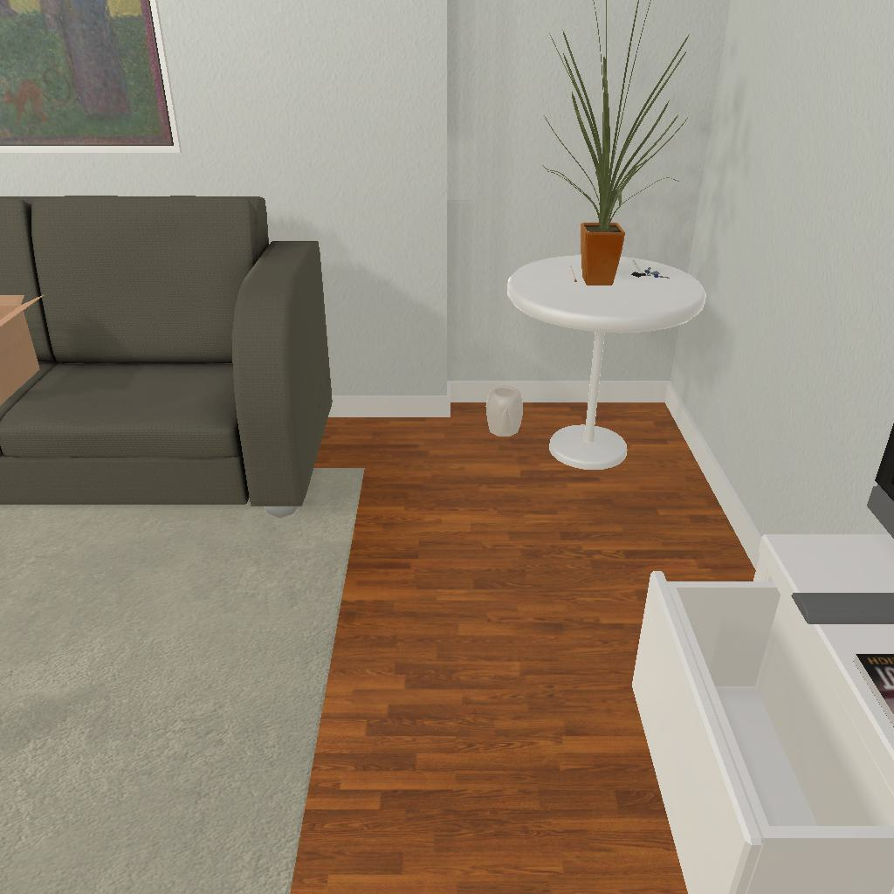

---------------------------------------------------------task: 5---------------------------------------------------------
--------------------------------------------------------------------------------------------------------------------------------------------------------------------
--------------------------------------------------------------------------------------------------------------------------------------------------------------------
Step:--------------------------------------------------------------------------7-------------------------------------------------------------------------------
----------------------------------------
VLM Prompt:
Image1:
Image2:
Image3:
**Instruction**
1. Analyze the provided images to identify all visible household objects and compare the difference between images (e.h. whether the object is opened or not and taken on hand or not), focusing on those relevant to the task description "put a book in armchair."
2. Use the analysis of images and the task hint "The agent must find an object of the desired type, pick it up, find the correct location to place it, and put it down there." to answer the question: what is the most reasonable action in the choices for the task description "put a book in armchair"?
3. Decide and write the answer using the template: The answer is: (i): , where i is the real number. If there is no desired object in images, search every place based on **Initial Observation** to find the object. And if no one is exactly correct, choose a similar answer.
**Initial Observation**
You are in the middle of a room. Looking quickly around you, you can see armchair (1), sofa (1), coffeetable (1), drawer (1-4), sidetable (1-3), dresser (1)
**Answer Choices**
(1): go to armchair 1
(2): go to sofa 1
(3): go to coffeetable 1
(4): go to sidetable 1
(5): go to dresser 1
(6): go to drawer 2
(7): go to drawer 3
(8): go to drawer 4
(9): go to sidetable 2
(10): go to sidetable 3
(11): close drawer 1
(12): take houseplant 1 from drawer 1
(13): take television 1 from drawer 1
(14): take box 1 from drawer 1
(15): take book 1 from drawer 1
(16): take wateringcan 1 from drawer 1
(17): take keychain 1 from drawer 1
(18): take pencil 1 from drawer 1
(19): take pencil 2 from drawer 1
(20): examine drawer 1
**Answer**
Let's think step by step by following the instructions.
----------------------------------------
----------------------------------------
Original Response:
Firstly, we need to analyze the images provided. In all three images, we can see an armchair, a side table with a houseplant on it, and part of what appears to be a drawer. There is also a gray rug on the floor. The images do not show any books in the immediate vicinity or on the visible furniture.
According to the task description "put a book in armchair," we need to find a book first. The initial observation mentions that there are drawers and a dresser in the room that are not visible in the images. Since books are commonly stored in drawers or on shelves, it is reasonable to assume that a book may be found in one of these storage units.
Considering the task hint, the agent must find an object of the desired type (a book), pick it up, find the correct location to place it (the armchair), and put it down there. Since no book is visible in the images, we should search the places where a book is likely to be found based on the initial observation.
Among the answer choices, the actions related to finding and taking a book include going to the drawer (6, 7, 8) or taking a book from the drawer (15). Since we do not know which drawer might contain a book, and there is no indication that drawer 1 is open or contains a book, it would be more reasonable to search the drawers first.
The answer is: (6): go to drawer 2. This action allows the agent to search for a book in one of the drawers that have not been visually confirmed to be empty or devoid of books. If a book is not found in drawer 2, the agent can then proceed to check the other drawers or the dresser.
----------------------------------------
----------------------------------------
>>> Refine Original VLM Response and Get Pure Action: go to drawer 2
----------------------------------------
-----------------------------------------------------------------
Running time: 14.490918159484863 seconds
Total Money: 2.15356
-----------------------------------------------------------------
-----------------------------------------------------------------
Text Observation:You arrive at loc 6. The drawer 2 is closed.
-----------------------------------------------------------------
UNSUCCEED